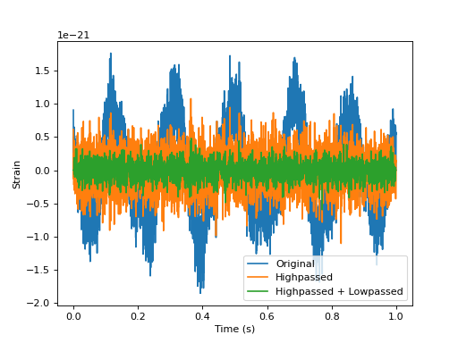

Filtering¶
Applying highpass / lowpass filters¶
import pycbc.noise
import pycbc.psd
import pycbc.filter
import pylab
# Generate some noise with an advanced ligo psd
flow = 5.0
delta_f = 1.0 / 16
flen = int(2048 / delta_f) + 1
psd = pycbc.psd.aLIGOZeroDetHighPower(flen, delta_f, flow)
# Generate 1 seconds of noise at 4096 Hz
delta_t = 1.0 / 4096
tsamples = int(1 / delta_t)
ts = pycbc.noise.noise_from_psd(tsamples, delta_t, psd, seed=127)
pylab.plot(ts.sample_times, ts, label='Original')
# Suppress the low frequencies below 30 Hz
ts = pycbc.filter.highpass(ts, 30.0)
pylab.plot(ts.sample_times, ts, label='Highpassed')
# Suppress the high frequencies
ts = pycbc.filter.lowpass_fir(ts, 1000.0, 8)
pylab.plot(ts.sample_times, ts, label='Highpassed + Lowpassed')
pylab.legend()
pylab.ylabel('Strain')
pylab.xlabel('Time (s)')
pylab.show()
(Source code, png, hires.png, pdf)
{kind=link}
{kind=link}

Applying an FIR filter¶
# Apply an FIR filter. The algorithm is written for high performance so if you
# have a large number of taps, it will resort to a FFT based implementation
# under the hood.
import pycbc.types
import pycbc.filter.resample
# Reference time series
ts = pycbc.types.TimeSeries([-1, 1, -1, 1, -1], delta_t=1.0)
# May also be a numpy array
coeff = pycbc.types.Array([1.0, 0, 1.0])
ts_filtered = pycbc.filter.resample.lfilter(coeff, ts)
# If you want to have a zero phase filter provide a symmetric set of coefficients
# The time delay will be compensated for.
ts_filtered2 = pycbc.filter.resample.fir_zero_filter(coeff, ts)
Matched Filter SNR¶
import pycbc.noise
import pycbc.psd
import pycbc.filter
import pycbc.waveform
import pylab
# Generate some noise with an advanced ligo psd
flow = 30.0
delta_f = 1.0 / 16
flen = int(2048 / delta_f) + 1
psd = pycbc.psd.aLIGOZeroDetHighPower(flen, delta_f, flow)
# Generate 16 seconds of noise at 4096 Hz
delta_t = 1.0 / 4096
tsamples = int(16 / delta_t)
strain = pycbc.noise.noise_from_psd(tsamples, delta_t, psd, seed=127)
stilde = strain.to_frequencyseries()
# Use a waveform as a matched filter
hp, hc = pycbc.waveform.get_fd_waveform(approximant="SEOBNRv2_ROM_DoubleSpin",
mass1=25, mass2=25,
f_lower=flow, delta_f=stilde.delta_f)
hp.resize(len(stilde))
snr = pycbc.filter.matched_filter(hp, stilde, psd=psd,
low_frequency_cutoff=flow)
pylab.plot(snr.sample_times, abs(snr))
pylab.ylabel('signal-to-noise ratio')
pylab.xlabel('time (s)')
pylab.show()
Chisq time series¶
import pycbc.noise
import pycbc.psd
import pycbc.waveform
import pycbc.vetoes
import pylab
# Generate some noise with an advanced ligo psd
flow = 30.0
delta_f = 1.0 / 16
flen = int(2048 / delta_f) + 1
psd = pycbc.psd.aLIGOZeroDetHighPower(flen, delta_f, flow)
# Generate 16 seconds of noise at 4096 Hz
delta_t = 1.0 / 4096
tsamples = int(16 / delta_t)
strain = pycbc.noise.noise_from_psd(tsamples, delta_t, psd, seed=127)
stilde = strain.to_frequencyseries()
# Calculate the power chisq (Bruce) chisq time series
hp, hc = pycbc.waveform.get_fd_waveform(approximant="SEOBNRv2_ROM_DoubleSpin",
mass1=25, mass2=25,
f_lower=flow, delta_f=stilde.delta_f)
hp.resize(len(stilde))
num_bins = 16
chisq = pycbc.vetoes.power_chisq(hp, stilde, num_bins, psd,
low_frequency_cutoff=flow)
# convert to a reduced chisq
chisq /= (num_bins * 2) - 2
pylab.plot(chisq.sample_times, chisq)
pylab.ylabel('$\chi^2_r$')
pylab.xlabel('time (s)')
pylab.show()